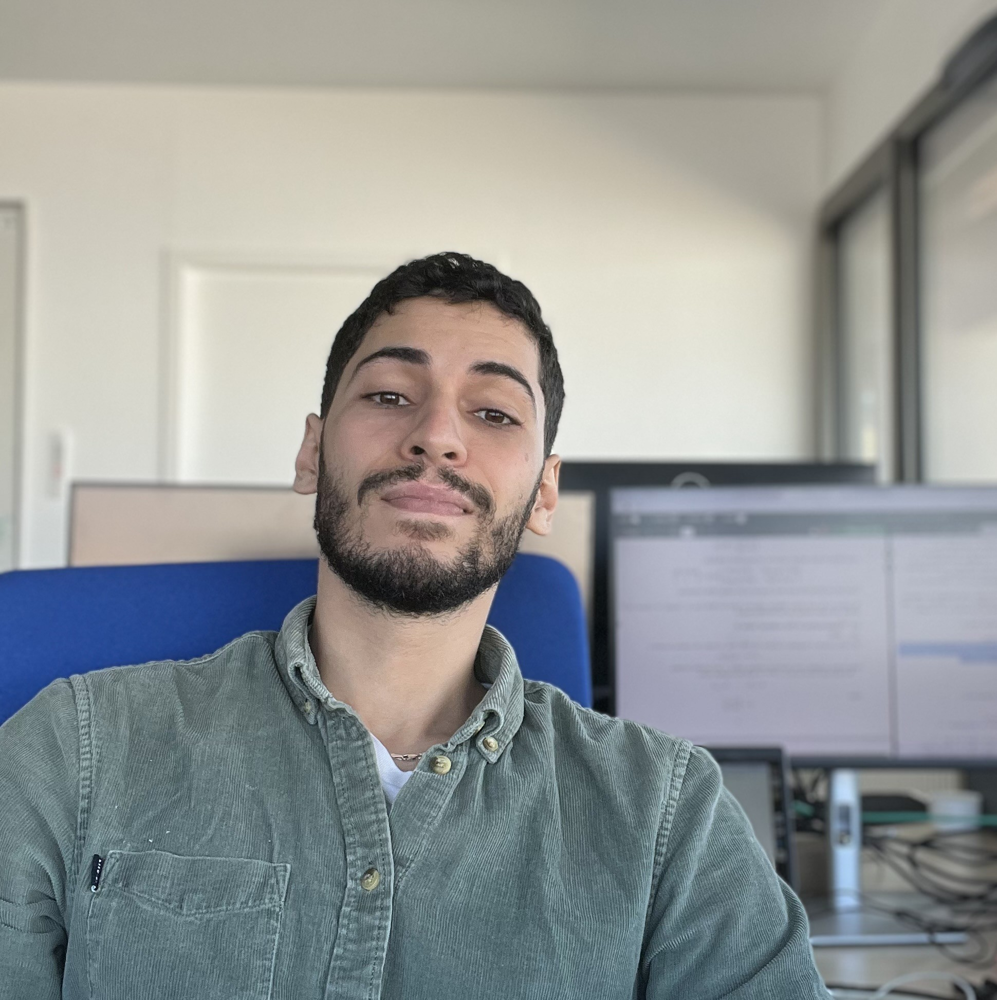

Postdoctoral researcher — Inria Makutu team, Pau, France
Inria center of Université de Bordeaux, Talence, France
I am currently a postdoctoral researcher in the Inria Makutu team, where I work on reduced-order modeling for wave propagation and harmonic full-waveform inversion. My research investigates how projection-based reduction techniques can be integrated into large-scale inversion workflows, with developments implemented within the hawen software. This postdoctoral position is part of the ERC project INCORWAVE.
Collaborators: Florian Faucher, Hélène Barucq, Ha Pham, Matteo Marcos.
I defended my PhD in November 2025 at the Inria center of Université de Bordeaux in the Inria Cardamom team. My doctoral research focused on coupling metric-based mesh adaptation with projection-based model reduction for nonlinear hyperbolic problems, with particular emphasis on compressible flows. The thesis was supervised by Nicolas Barral and Tommaso Taddei.
Email: ishak.tifouti@inria.fr